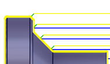
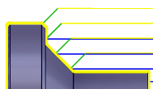

<div id="retractLength"><p>毎回の粗取り切削後の退出動作をコントロールします。以下に緑色で表示します。</p>
<table class="tipTable" cellspacing="10">
<tr>
<td><center></center></td>
<td><center></center></td>
</tr><tr>
<td><center><p><b>2mm の退避距離</b></p></center></td>
<td><center><p><b>6mm の退避距離</b></p></center></td>
</tr></table>
</div>